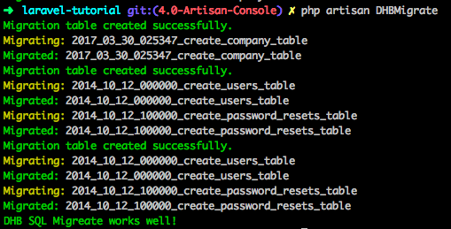

Laravel「4.0-Artisan Console」
Artisan Console
第二章介绍过Migrations, 当时我们只是介绍了，它可以帮助我们生成数据库表结构，但是当时只是在一个库里面生成的，结合到DHB3.0。
我们有业务很多库，所以需要在多个业务库生成表结构。
创建一个指令
php artisan make:command DHBMigrate
//注册指令
//app/Console/Kernel.php的$commands里面添加DHBMigrate指令
protected $commands = [
Commands\DHBMigrate::class
];
指令的执行方法
//调用已存在的指令migrate
public function handle()
{
$common_database_list = ['common'];
$business_database_list = ['data_1', 'data_2', 'data_3'];
foreach ($common_database_list as $database) {
$this->call('migrate', [
'--database' => $database,
'--path' => 'database/migrations/common'
]);
}
foreach ($business_database_list as $database) {
$this->call('migrate', [
'--database' => $database,
'--path' => 'database/migrations/data'
]);
}
$this->info('DHB SQL Migrate works well!');
}
这样我们的表结构就生成好了，指令&&跨库&&自动化
